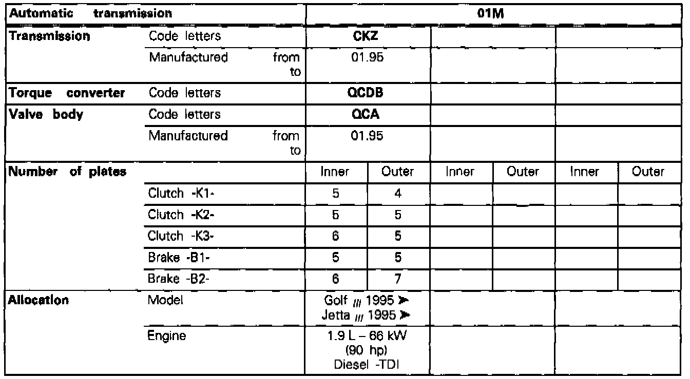
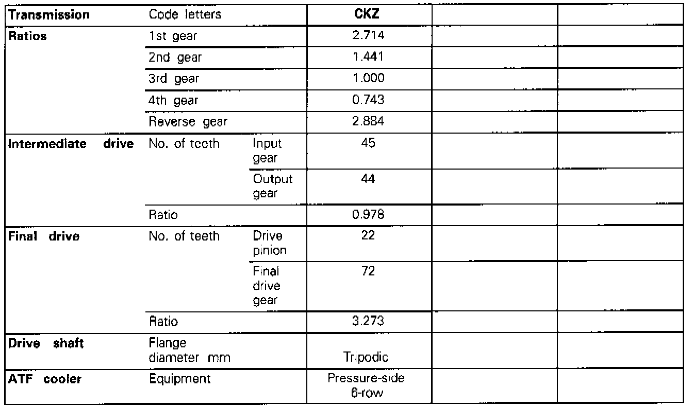

Operation CHARM
: Car repair manuals for everyone.
Home
>>
Volkswagen
>>
1997
>>
GTI (1H1) V6-2.8L (AAA)
>>
Repair and Diagnosis
>>
Powertrain Management
>>
Application and ID
>>
Transmission ID
>>
01M Transmission
>>
Transmission Application Charts
>>
Transmission Code CKZ
Transmission Code CKZ

